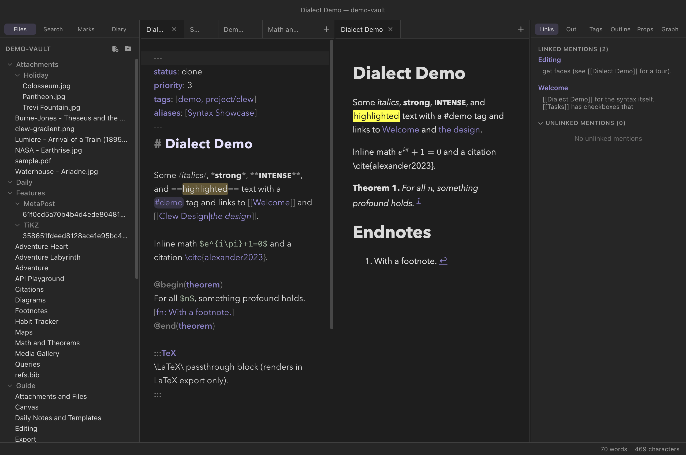

Writing
The jmarkdown dialect
Clew's reading mode is the jmarkdown engine, and jmarkdown speaks a dialect: a small set of inline forms designed around what academic writing actually needs — italics for terms, highlights for emphasis that survives a photocopier, subscripts that work in prose, footnotes written where they belong. The dialect is a superset of Markdown: it adds and remaps a handful of inline forms and leaves everything else — headings, lists, tables, links, code — exactly as you know it. And it is optional: a per-vault switch restores standard Markdown emphasis for vaults written elsewhere.
The philosophy
Standard Markdown gives its best syntax to the wrong things for scholarly prose. The single most common inline operation in academic writing — italicizing a term, a title, a foreign phrase — costs asterisks that clutter the source, and the things academics write constantly (subscripts, superscripts, highlights, inline footnotes) have no syntax at all. jmarkdown redistributes the keystrokes:
/italics/reads like the typesetting instruction it is, and frees the single asterisk;*strong*makes bold a one-character affair;- sub- and superscripts are written the way TeX writes them —
H_2O,x^2— which any mathematical writer already has in their fingers; - footnotes are written inline, at the point they attach, instead of as a marker here and a body somewhere at the bottom of the file.
The same source renders to HTML in the app and to LaTeX for print export, which is why the dialect leans toward TeX conventions wherever the two worlds meet. All examples in this chapter assume the dialect — the default in a Clew vault; the Standard Markdown switch at the end of the chapter is for vaults that opt out.

The inline forms
Emphasis
Four grades, each with its own marker:
You write
Some /italics/, *strong*, **intense**, and __underlined__ text.Reading mode shows
Some italics, strong, intense, and underlined text.
So: /x/ is italic, *x* is strong,
**x** is intense — a heavier grade rendered as
bold small capitals in reading mode (bold italic in LaTeX and PDF
export) — and __x__ is underline. Note what this
means for muscle memory from other editors: a single asterisk is
already bold here, and a double asterisk is something stronger still.
A slash starts italics only at the start of a word and ends them only
at the end of one, so a slash that belongs to something else stays a
slash: /italic/, (/aside/) and
"/quoted/" are italic, while and/or,
1/2/3, /usr/local/bin/, ~/notes/,
./src/ and C:/Users/x/ stay as written. Bare
web and email addresses — https://…, ftp://…,
www.…, name@example.org — become links. One
limit: a single path segment with a slash either side, as in see
/tmp/ here, still reads as italics; write \/tmp/ to
keep it literal. The editor reads slashes by the same rule, in source
mode and live edit, so what it shows in italics is what will render in
italics. (0.12.0 read slashes more eagerly — /usr/bin
became an italic usr and a bare web address lost its slashes in
pairs — and linked no bare addresses.)
Highlights and strikethrough
You write
A ==highlighted phrase== and a ~deleted~ one.Reading mode shows
A highlighted phrase and a deleted one.
==x== is the same highlight syntax Obsidian uses.
Strikethrough is a single tilde on each side: ~x~.
Subscripts and superscripts
These are TeX-style, exactly as in math mode: _ for a
subscript, ^ for a superscript, braces when the script is
longer than one character.
You write
Water is H_2O; the area grows as x^2, and beyond x^{10}
the approximation fails. The total is E_{total}.Reading mode shows
Water is H2O; the area grows as x2, and beyond x10 the approximation fails. The total is Etotal.
^x^ paired-caret form — superscripts are the
TeX shape only (x^2, x^{10}). And since a
bare ~ means strikethrough, a subscript is written
H_2O or _{…}, never with tildes. For real
mathematics, prefer inline math
($e^{i\pi}$), which brings the full LaTeX repertoire.
Inline footnotes
Footnotes are written where they attach, body and all. Two forms:
anonymous — [fn: …] — for the common case, and labelled —
[^label: …] — when you want a stable name. Footnotes
number themselves in the rendered output: the reader sees a numbered
mark, and the body is typeset as a proper footnote.
You write
Inline footnotes are a jmarkdown speciality.[fn: This one is anonymous.]
Labelled ones work too.[^model: Multi-paragraph footnotes stay attached
to their paragraph.]A note is not confined to one paragraph. Leave a blank line, indent the continuation, and close the bracket at the end: everything between the brackets is one note, and the engine sets it as its own block at the foot of the page.
You write
A note may run to several paragraphs: indent the continuation and keep
the closing bracket for the end.[^long: The first paragraph of a long
note.
The second. Everything inside the brackets is one note.]The source pane colours the whole body, break and all, so you can always see how far a note reaches — and the two brackets highlight as a pair even when several paragraphs separate them.
Both examples are the demo vault's Footnotes note verbatim — open it in the app to see the result typeset.
Math and citations
Inline math is $…$, display math $$…$$, both
full LaTeX; citations are the LaTeX commands themselves —
\cite{key}, \citep{key},
\fullcite{key} and family — resolved against the vault's
BibTeX files. Both are big enough to have chapters of their own:
Math and theorems and
Citations and bibliographies.
You write
Inline math $e^{i\pi}+1=0$ and a citation \cite{alexander2023}.Alignment
Two arrow-like line forms control alignment:
>> text << centers a line, and
>> text (no closer) right-aligns it. Both are
available as toggling commands in the Format menu.
You write
>> This line is centered. <<
>> This one is pushed to the right.What stays standard Markdown
Everything not listed above is ordinary Markdown, and behaves the way it does everywhere else:
- Headings —
#through######. - Lists — bullets, numbered lists, task lists
(
- [ ]), and nesting. - Tables — pipe tables with an alignment row.
- Blockquotes —
>, including GitHub-style alerts:> [!NOTE],[!TIP],[!IMPORTANT],[!WARNING],[!CAUTION]render as styled callout boxes. - Code — backtick spans and fenced blocks with syntax highlighting.
- Links —
[text](url)for external links,[[wikilinks]]for internal ones (next chapter). - Description lists —
Term:: definition, the definition on the same line or indented beneath the term, several paragraphs if you like. Reading mode sets the list as two columns, so the definition sits beside its term and every term in one list shares a column width; a definition may hold paragraphs, lists and blocks, which stack in the second column. (Indent a list inside a definition by two spaces — four, or a tab, makes it part of the paragraph above it instead.) This is also why Dataview's inlineKey:: valuefields are not data in Clew: see Properties. - Horizontal rules —
---.
Beyond inline: a glance at the block dialect
The dialect's block-level side appears throughout the reading-mode
chapters, so here it is only sketched. Container directives fence a
region between :::name and :::;
@begin(name) … @end(name) environments do the same job
with named closers (so they nest without colon-counting). The demo
vault's Dialect Demo note shows a theorem:
You write
@begin(theorem)
For all $n$, something profound holds. [fn: With a footnote.]
@end(theorem)
Two containers deserve mention because they are how one source file
serves both web and print: :::TeX … ::: emits its content
verbatim in LaTeX export only (nothing in the app's reading mode), and
:::HTML … ::: is the mirror image — web only, with the
Markdown inside it processed. Others you will meet:
:::abstract, :::title-box,
:::comment (omitted from all output — editorial notes),
:::mermaid and :::TiKZ for
diagrams, and :::game for
strategic-form game matrices. Inline directives like
@label[key] and @ref[key] (or the :
spellings) handle cross-references, and {{TOC}} inserts a table of
contents. The Format menu inserts every one of these, with the
selection wrapped.
:::mermaid and
@begin(mermaid). The Obsidian-style
```mermaid fence also works in Clew — because Clew adds
it to the engine, precisely so that Obsidian vaults render — see
Diagrams.
The Standard Markdown switch
The dialect's inline remapping is a per-vault choice. In Settings
(⌘,), the This vault section carries a
toggle labelled "Standard Markdown syntax: disable the
jmarkdown inline dialect". It is stored in the vault's own
.clew/vault-settings.json, so the choice travels with the
vault, not with your machine.
With the switch on, the engine stops applying the
inline dialect — *strong*, **intense**,
/italic/, ==highlight==,
~strikethrough~, and the TeX-style sub- and superscripts —
and inline emphasis reverts to standard Markdown:
*italic* and **bold** mean what they mean
everywhere else. Everything else survives untouched: math, citations,
diagrams, theorem environments, footnotes, queries, wikilinks. Both
reading mode and exports honor the switch,
and any open previews re-render the moment you toggle it.
This is the switch to flip when you point Clew at an existing vault —
an Obsidian vault, a folder of notes from any standard-Markdown tool —
whose emphasis was written as *italics* and
**bold**. The files themselves are never rewritten; the
switch only changes how they render, so the vault keeps meaning what
its author meant.
/slashed/ phrase as if it were italic, and
the Format italic command still emits slashes. Type standard emphasis
by hand in such vaults.
*strong* as italics and
show /italics/ as plain slashed text, because it renders
standard Markdown. ==highlights==, wikilinks, tags,
frontmatter, and task lists mean the same thing in both apps. If a
vault must read identically in both, keep the Standard Markdown
switch on and write standard emphasis.
Reference
The dialect against standard Markdown, form by form:
| You write | jmarkdown dialect (default) | Standard Markdown (switch on) |
|---|---|---|
/x/ | Italic | Plain text with slashes |
*x* | Strong (bold) | Emphasis (italic) |
**x** | Intense (bold small caps; bold italic in print) | Strong (bold) |
__x__ | Underline | Strong (bold) |
==x== | Highlight | Not standard Markdown |
~x~ | Strikethrough | Still strikethrough — single-tilde deletion is GFM behaviour, not part of the dialect |
H_2O, x^2, x^{10} | Sub-/superscript | Literal characters |
[fn: …], [^label: …] | Inline footnote | Not standard Markdown |
$…$, $$…$$ | LaTeX math | LaTeX math (kept) |
\cite{key} | Citation | Citation (kept) |
>> x << / >> x | Center / right-align | Alignment (kept) |
:::name … :::, @begin(name)…@end(name) | Container / environment | Container / environment (kept) |
"Kept" rows are the point of the switch's design: it removes only the inline emphasis remapping. The academic machinery — math, citations, theorems, diagrams, footnote commands, directives — works in both modes.
See also
- Callouts —
> [!note]boxes, titles and folding - Tabbing — LaTeX's tabbing, as a fence or an environment
- The editor — dialect-aware highlighting, and the Format menu that produces every form on this page.
- How rendering works — the engine that gives the dialect its meaning.
- Math and theorems — the
$…$world, AMS environments, numbering. - Citations and bibliographies — the
\citefamily and BibTeX. - Settings and hotkeys — where the per-vault switches live.